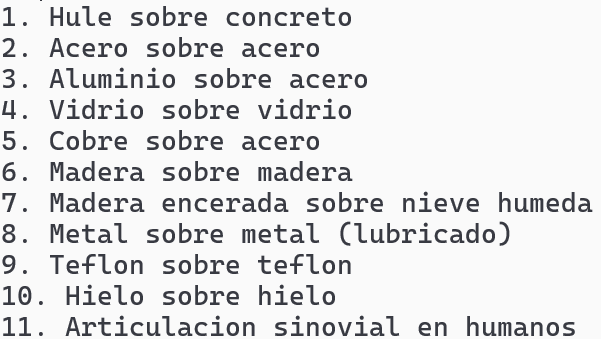

PRÁCTICA NO. 4-5
CÁLCULO
OBJETIVO
DESCRIPCIÓN

Pareja de materiales para el coeficiente de friccion estatica:
Angulo de inclinacion:
Calcular si es angulo critico para estatica
Pareja de materiales para el coeficiente de friccion dinamica:
Angulo para el coeficiente de friccion dinamica:
Calcular si es angulo critico para dinamica
¿Es angulo critico?
c) Si el angulo de inclinación para el caso b) con coeficiente de friccion dinamica, se reduce a un valor menor que el angulo critico encontrado en a) para el coeficiente de friccion estatica, puede encontrarse un ángulo nuevo tal que el bloque se mueve hacia abajo por el plano con rapidez constante de nuevo como una partícula en equilibrio donde el nuevo angulo critico sea menor al antiguo
INTEGRANTES
Reyes Salazar Diego
Guerra Salinas Edgar Rafael
Suarez Martinez Jesus Antonio
Lobato Ramírez Ulises Uriel
Apreza Rodríguez Emiliano
GRUPO Y MATERIA
1BV2
Mecánica y Electromagnetismo